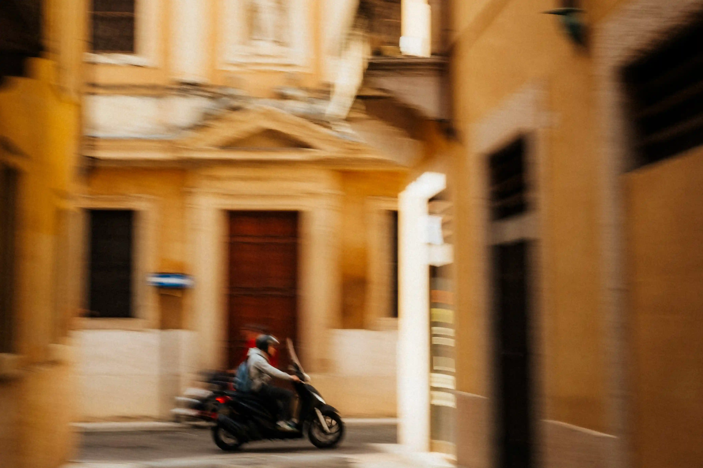
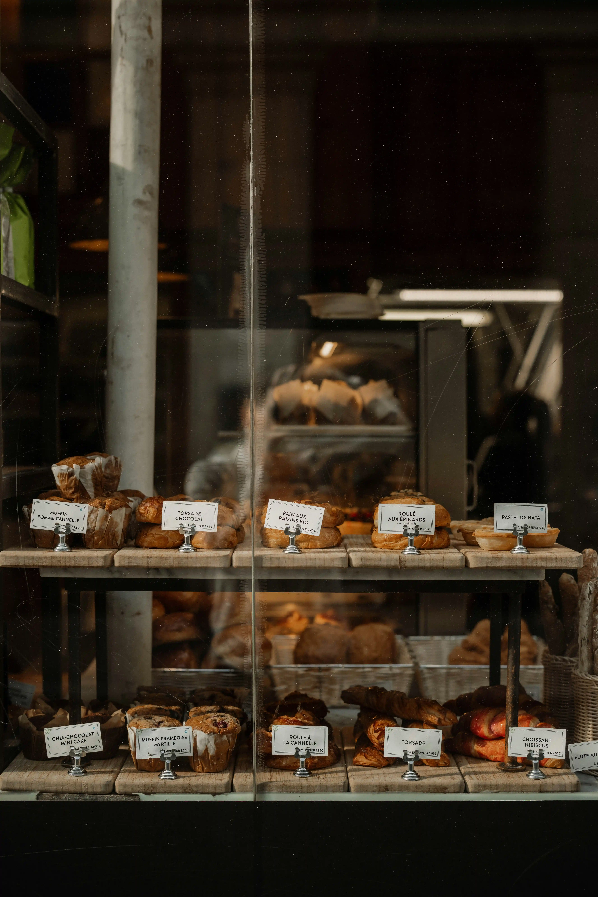
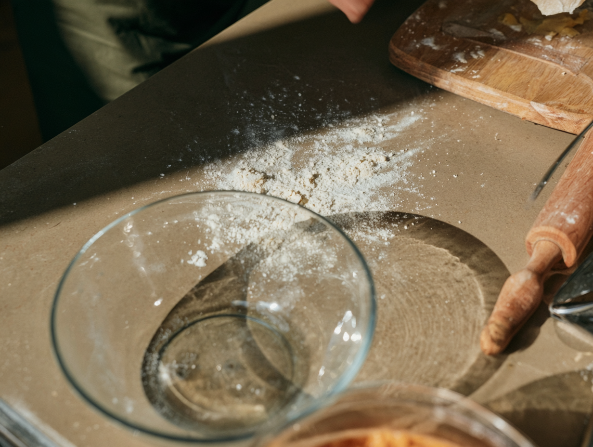
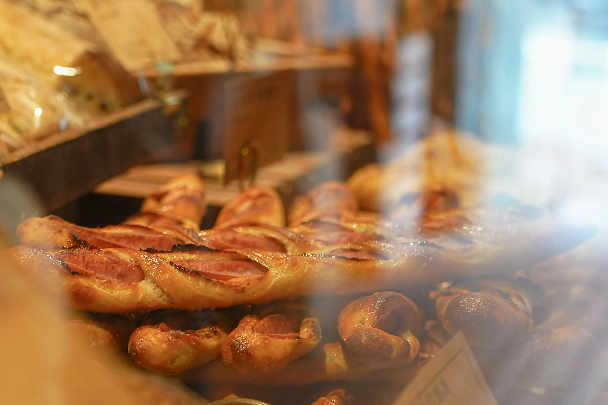
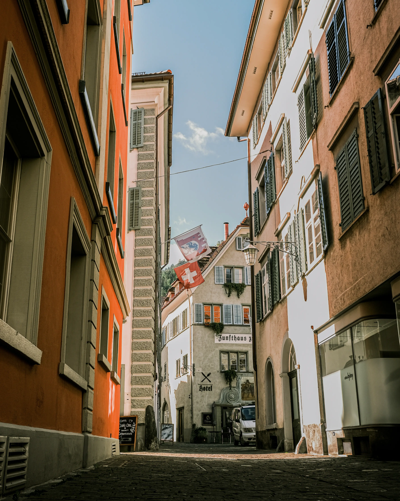

Alles begann
genau hier


2015 erhält Dora, die Gründerin von Panedodo, die Diagnose Zöliakie
Damals lebt sie noch in Italien, wo das glutenfreie Angebot schon gross ist und immer weiter wächst.
100% Glutenfrei

Panedodo-Weg


Damals lebt sie noch in Italien, wo das glutenfreie Angebot schon gross ist und immer weiter wächst.
2016 zieht Dora in die Schweiz und merkt schnell: Für Zölis gibt’s hier nicht viel zu holen. In den grossen Supermärkten stehen ein paar traurige, abgepackte Produkte im Regal. Im Reformhaus ist die Auswahl etwas grösser – doch auch das wird ein paar Jahre später Konkurs anmelden. Und glutenfreie Cafés oder Bäckereien? Fehlanzeige! Was also tun in dieser glutenfreien Wüste?
Im August 2023 nimmt Dora die Sache selbst in die Hand. Sie beginnt, bei sich zu Hause zu backen. Über einen Onlineshop verkauft sie ihre Kreationen zur Abholung in Chur. So entsteht Panedodo – aus einem Bedürfnis und ganz viel Leidenschaft.
Während rund eineinhalb Jahren entstehen bei Panedodo frische Brote, feine Backwaren und saisonale Spezialitäten, von Weihnachtsguetzli bis zu neuen Kreationen. Neben Privatkund:innen beliefert Dora auch Geschäftskunden, darunter das Restaurant Flavours in Chur.

Ab Weihnachten 2024 legt Dora wegen ihrer Mutterschaft eine Pause ein. Was ursprünglich nur ein Jahr dauern sollte, wird mit dem Wiedereinstieg ins Berufsleben und einem kleinen Kind schwieriger als gedacht. Deshalb bleibt Panedodo vorerst geschlossen.


Doras Traum von einer eigenen glutenfreien Bäckerei lebt trozdem weiter. Sie sucht nach einem bezahlbaren Backraum in Chur und Umgebung. Vielleicht wartet dort bereits das nächste Kapitel von Panedodo.
Quiz
FAQ
Panedodo ist eine Hausbäckerei im Raum Chur. Sie funktioniert nach dem Prinzip «online bestellen, vor Ort abholen». Alle Backwaren werden auf Anfrage frisch produziert.
Panedodo-Produkte sind zur Zeit nicht erhältlich. Aufgrund von Mutterschaft und dem Wiedereinstieg ins Berufsleben legt Panedodo eine Pause ein.
Auch wenn der Onlineshop geschlossen ist, lebt der Traum von einer eigenen glutenfreien Bäckerei weiter. Dora ist auf der Suche nach einem bezahlbaren Backraum in Chur und Umgebung, um ein neues Kapitel aufzuschlagen. Updates zur Neueröffnung werden über Instagram veröffentlicht.
Panedodo ist eine Einzelfirma. Die Gründerin Dora ist selbst von Zöliakie betroffen und perfektioniert seit Jahren die Kunst des glutenfreien Backens. Nun hat sie entschieden, ihre Backwaren der Öffentlichkeit zugänglich zu machen.
Ja. Alle Backwaren sind in einer glutenfreien Backstube gefertigt, wo der verbindliche Grenzwert von 20 ppm garantiert nicht überschritten werden kann. Zopf und Focaccia werden mit glutenfreiem Weizen hergestellt. Darauf wird auch auf der entsprechenden Produktseite hingewiesen.
Kontakt